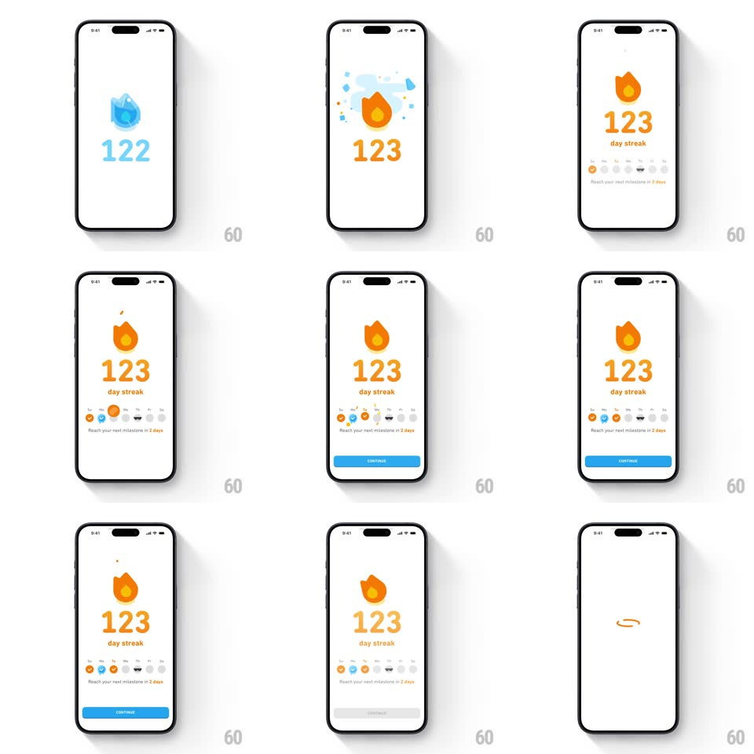

Media
Frame-by-frame

Rebuild this animation 1:1: Duolingo's streak freeze restore - an ice-encased flame holding "122" cracks and bursts into a live orange flame at "123" with ice shards flying, then the week row fills and Continue slides up.

Rebuild this animation 1:1: Duolingo's streak freeze restore - an ice-encased flame holding "122" cracks and bursts into a live orange flame at "123" with ice shards flying, then the week row fills and Continue slides up. ## Integration Integration: stack-agnostic spec - springs given as stiffness/damping, timed motions as duration + curve; map every value to your framework and animation library of choice. ## Scene White screen: a large blue frozen flame icon over an icy "122", which bursts into the classic orange flame over "123" amid flying light-blue ice shards. Below: "day streak" sublabel, a week row of circles (some orange, some icy blue, rest grey), the caption "Reach your next milestone in 2 days", and a blue CONTINUE pill. The clip ends with the flame morphing into a small ring badge. ## Motion spec Pattern: state-burst celebration, ~3s total. - Freeze: the icy flame and "122" hold still (400ms) with a faint frost shimmer. - Burst: the ice shell cracks and explodes outward (shards fly on radial paths with rotation, 500ms, ease-out, fading at the edge) as the orange flame pops in behind (scale 0.7 -> 1.1 -> 1, spring ~380/18). - Counter: "122" rolls to "123" (400ms odometer) with a color shift icy blue -> orange. - Calendar: week circles fill left to right, the frozen day flipping from ice-blue to orange (120ms stagger, pop each). - Continue: the pill slides up (300ms, +150ms); the flame finally settles and morphs to the ring badge (400ms). ## Calibration - The burst is the payoff - shards must read as ice (light blue, angular), not confetti. - One frozen day in the week row stays visibly "thawed" by the streak. ## Reduced motion Ice cross-fades to the live flame (300ms); counter snaps; no shards. ## Don't miss - The number color change happens during the roll, not after. - The flame has a brief squash on landing, like a heartbeat.